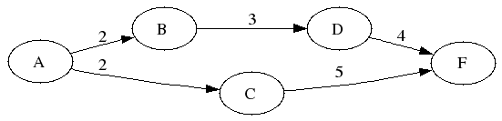
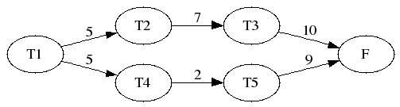

Tema 9: Programación lógica con restricciones
Índice
- 1. Restricciones sobre números reales: CLP(R)
- 2. Restricciones sobre números racionales: CLP(Q)
- 3. Restricciones sobre dominios finitos: CLP(FD)
- 3.1. El módulo de restricciones sobre dominios finitos: CLP(FD)
- 3.2. Criptoaritmética
- 3.3. Problema de las N reinas
- 3.4. Optimización con CLP(FD)
- 3.5. Planificación de tareas con CLP(FD)
- 3.6. Planificación óptima de tareas con CLP(FD)
- 3.7. Problema de los músicos mediante CLP(FD)
- 3.8. El problema de la cebra con CLP(FD).
- 4. Restricciones sobre variables booleanas con CLP(B)
- 5. Ejercicios
- 5.1. Producto escalar con CLP(R)
- 5.2. Matrices equilibradas
- 5.3. Criptoarimética con CUATRO * 5 = VEINTE
- 5.4. Problema de la mochila
- 5.5. Asignación óptima de tareas
- 5.6. El factorial
- 5.7. El máximo de dos números enteros
- 5.8. El algoritmo de Euclides
- 5.9. Recorridos del caballo de ajedrez
- 5.10. Descomposiciones en productos de dos factores
- 5.11. Descomposiciones en sumas de dos sumandos
- 5.12. Cuadrados mágicos
- 5.13. Sucesión de Fibonacci
- 5.14. Problema de las N reinas
- 5.15. Coloreado de mapas
- 6. Bibliografía
1. Restricciones sobre números reales: CLP(R)
1.1. Uso del módulo de restricciones sobre números reales
Importación del módulo
?- use_module(library(clpr)). true.
Diferencia entre objetivo y restricción:
?- 1 + X = 5. false. ?- {1 + X = 5}. X = 4.0
- Restricciones aritméticas en CLP(R):
- <restricciones> := {<restricción 1>, <restricción 2>, …}
- <restricción> := <expresión 1> <operador> <expresión 2>
donde- <expresión 1> y <expresión 2> son expresiones aritméticas
- <operador> es uno de los siguientes:
=, =\=, <, =<, >, >=
1.2. Ecuaciones e inecuaciones en CLP(R)
Ejemplo de ecuaciones e inecuaciones:
?- {3 * X - 2 * Y = 6, 2 * Y = X}. X = 3.0, Y = 1.5. ?- {Z =< X - 2, X + 2 = 5}. X = 3.0, {Z=1.0-_12374,_12374>=0.0} ?- {X > 0, X + 2 < 0}. false.
1.3. Programa con CLP(R
convierte(-C,+F)se verifica siCson los grados centígrados correspondientes aFgrados Fahrenheit; es decir, C = (F-32)*5/9.Programa Prolog
convierte_1(C,F) :- C is (F-32)*5/9.
Sesión con el programa Prolog
?- convierte_1(C,95). C = 35. ?- convierte_1(35,F). ERROR: Arguments are not sufficiently instantiated
Programa CLP(R)
:- use_module(library(clpr)). convierte_2(C,F) :- {C = (F-32)*5/9}.
Sesión con el programa CLP(R)
?- convierte_2(C,95). C = 35.0 ?- convierte_2(35,F). F = 95.0 ?- convierte_2(C,F). {F=32.0+1.7999999999999998*C}.
1.4. Optimización con CLP(R)
Optimización con
minimize/1ymaximize/1:?- {X =< 5}, maximize(X). X = 5.0 ?- {X =< 5, 2 =< X}, minimize(2 * X + 3). X = 2.0 ?- {3 =< X, X + 1 =< Y + 2, Y =< 9, Z = X + Y}, minimize(Z). X = 3.0, Y = 2.0, Z = 5.0 ?- {X + Y =< 4}, maximize(X + Y). {Y=4.0-X} ?- {X =< 5}, minimize(X). false.
Optimización con
sup/2einf/2:?- {2 =< X, X =< 5}, inf(X, I), sup(X, S). I = 2.0, S = 5.0, {X>=2.0,X=<5.0} ?- {3 =< X, X + 1 =< Y + 2, Y =< 9, Z = X + Y}, inf(Z, I), sup(Z, S). I = 5.0, S = 19.0, {Z= -1.0+2.0*X+_6360,_6360>=0.0,Y= -1.0+X+_6360,X+_6360=<10.0,X>=3.0}
1.5. Planificación de tareas
- Problema: Calcular el menor tiempo necesario para realizar las tareas
A, B, C y D teniendo en cuenta que los tiempos empleados en cada una
son 2, 3, 5 y 4, respectivamente, y además que A precede a B y a C y
que B precede a D.
 Plan óptimo:
?- {Ta >= 0, Ta + 2 =< Tb, Ta + 2 =< Tc, Tb + 3 =< Td, Tc + 5 =< Tf, Td + 4 =< Tf}, minimize(Tf). Ta = 0.0, Tb = 2.0, Td = 5.0, Tf = 9.0, {_9152>=0.0,_9170=2.0-_9152,_9152=<2.0,Tc=4.0-_9152}
1.6. La sucesión de Fibonacci
fib(+N,-F)se verifica siFes elN-ésimo término de la sucesión de Fibonacci; es decir, 0, 1, 1, 2, 3, 5, 8, 13, 21, …Programa Prolog (sin restricciones)
fib_1(N, F) :- ( N = 0, F = 1 ; N = 1, F = 1 ; N > 1, N1 is N - 1, fib_1(N1, F1), N2 is N - 2, fib_1(N2, F2), F is F1 + F2 ).
Sesión con el programa Prolog
?- fib_1(6,F). F = 13 ?- fib_1(N,13). ERROR: Arguments are not sufficiently instantiated
Programa CLP(R)
:- use_module(library(clpr)). fib_2(N, F) :- ( {N = 0, F = 1} ; {N = 1, F = 1} ; {N > 1, F = F1 + F2, N1 = N- 1, N2 = N - 2}, fib_2(N1, F1), fib_2(N2, F2) ).
Sesión con el programa CLP(R)
?- fib_2(6, F). F = 13.0 ?- fib_2(N,13). N = 6.0 ?- fib_2(N,4). ERROR: Out of global stack
Modificación de
fib_2para determinar los números que no son términos de la sucesiónfib_3(N, F) :- ( {N = 0, F = 1} ; {N = 1, F = 1} ; {N > 1, F = F1 + F2, N1 = N - 1, N2 = N - 2, F1 >= N1, F2 >= N2}, fib_3(N1, F1), fib_3(N2, F2) ).
Sesión
?- fib_3(6,F). F = 13.0 ?- fib_3(N,13). N = 6.0 ?- fib_3(N,4). false.
- El código de las definiciones anteriores se encuentra en fibonacci_clp.pl.
2. Restricciones sobre números racionales: CLP(Q)
2.1. Uso del módulo de restricciones sobre números racionales
Cálculos con CLP(Q)
?- use_module(library(clpq)). true. ?- {X = 2 * Y, Y = 1 - X}. X = 2r3, Y = 1r3.
2.2. Planificación de tareas con CLP(Q)
- Especificación de un problema mediante
tareasyprecede
 tareas(+LTD)se verifica siLTDes la lista de los paresT/Dde las tareas y sus duraciones.tareas([t1/5, t2/7, t3/10, t4/2, t5/9]).
precede(+T1,+T2)se verifica si la tareaT1tiene que preceder a laT2.precede(t1, t2). precede(t1, t4). precede(t2, t3). precede(t4, t5).
planificación(P,TP)se verifica siPes el plan (esto es una lista de elementos de la forma tarea/inicio/duración) para realizar las tareas en el menor tiempo posible yTPes dicho tiempo. Por ejemplo,?- planificación(P,TP). P = [t1/0/5,t2/5/7,t3/12/10,t4/_20034/2,t5/_20052/9], TP = 22, {_20084= -6-_20098-_20092,_20098+_20092>= -6,_20092=<0,_20052=13+_20098, _20098=<0,_20034=11+_20098+_20092,_20186= -9+_20098+_20092} ?- planificación([_/I1/_, _/I2/_, _/I3/_, _/I4/_, _/I5/_],TP). I1 = 0, I2 = 5, I3 = 12, TP = 22, {_27474= -6-_27488-_27482,_27488+_27482>= -6,_27482=<0,I5=13+_27488, _27488=<0,I4=11+_27488+_27482,_27576= -9+_27488+_27482}
Su definición es
planificación(P, TP) :- tareas(LTD), restricciones(LTD, P, TP), minimize(TP).
restricciones(LTD,P,TP)se verifica siPes un plan para realizar las tareas deLTDcumpliendo las restricciones definidas porprecedencia/2yTPes el tiempo que se necesita para ejecutar el planP.restricciones([],[],_TP). restricciones([T/D | RLTD], [T/I/D | RTID], TP) :- {I >= 0, I + D =< TP}, restricciones(RLTD, RTID, TP), restricciones_aux(T/I/D, RTID).
restricciones_aux(TID,LTID)se verifica si el triple tarea-inicio-duraciónTIDes consistente con la lista de triples tarea-inicio-duraciónLTID.restricciones_aux(_,[]). restricciones_aux(T/I/D, [T1/I1/D1 | RTID]) :- ( precede(T, T1) -> {I + D =< I1} ; precede(T1, T) -> {I1 + D1 =< I} ; true ), restricciones_aux(T/I/D, RTID).
- El código de la planificación de tareas se encuentra en planificacion.pl.
3. Restricciones sobre dominios finitos: CLP(FD)
3.1. El módulo de restricciones sobre dominios finitos: CLP(FD)
3.1.1. Importación del módulo de restricciones de dominios finitos.
Se importa con
?- use_module(library('clp/bounds')). true.
3.1.2. Asignación de valores a las variables del dominio
indomain(X)asigna un valor a la variable de dominio acotadoX, en orden creciente. Por ejemplo,?- X in 1..2, Y in 1..10, X + 7 #< Y, indomain(X), indomain(Y). X = 1, Y = 9 ; X = 1, Y = 10 ; X = 2, Y = 10.
3.1.3. Búsqueda de valores de las variables del dominio
label(L)se verifica si existe una asignación que verifica las restricciones de las variables de la listaL. Por ejemplo,?- L = [X, Y], L ins 1..2, label(L). L = [1,1], X = Y, Y = 1 ; L = [1,2], X = 1, Y = 2 ; L = [2,1], X = 2, Y = 1 ; L = [2,2], X = Y, Y = 2. ?- L = [_X, _Y], L ins 1..2, label(L). L = [1,1] ; L = [1,2] ; L = [2,1] ; L = [2,2].
3.1.4. Restricción de valores distintos
all_distinct(L)se verifica si todos las variables de la listaLtienen valores distintos. Por ejemplo,?- L = [X, Y], L ins 1..2, all_distinct(L), label(L). L = [1,2], X = 1, Y = 2 ; L = [2,1], X = 2, Y = 1. ?- L = [_X, _Y], L ins 1..2, all_distinct(L), label(L). L = [1,2] ; L = [2,1].
3.1.5. Restricciones de dominio y aritméticas
Ejemplo de restricciones de dominio y aritméticas:
?- X in 1..5, Y in 0..4, X #< Y, Z #= X+Y+1, findall(X-Y-Z,label([X,Y,Z]),L). L = [1-2-4,1-3-5,1-4-6,2-3-6,2-4-7,3-4-8], X in 1..3, Z#=X+Y+1, X#=<Y+ -1, Z in 4..8, Y in 2..4. ?- [X,Y] ins 1..2, Z #= X+Y, findall(X-Y-Z,label([X,Y,Z]),L). L = [1-1-2,1-2-3,2-1-3,2-2-4], X in 1..2, X+Y#=Z, Y in 1..2, Z in 2..4.
- Tipos de restricciones en CLP(FD):
- de dominio de variables:
<variable> in <Mínimo>..<Máximo> - de dominio de lista:
<lista> ins <Mínimo>..<Máximo> - aritmética:
<expresión 1> <relación> <expresión 2>con<relación>en#=,#\=,#<,#>,#=<,#>=. - de enumeración con
indomain/1,label/1ylabeling/2. - combinatorias con
all_distinct/1.
- de dominio de variables:
3.2. Criptoaritmética
solución([S,E,N,D],[M,O,R,E],[M,O,N,E,Y])se verifica si cada una de las letras se sustituye por un dígito distinto de forma queSEND+MORE=MONEY. Por ejemplo,?- solución(L1,L2,L3). L1 = [9,5,6,7], L2 = [1,0,8,5], L3 = [1,0,6,5,2] ; false. ?- solución([S,E,N,D],[M,O,R,E],[M,O,N,E,Y]). S = 9, E = 5, N = 6, D = 7, M = 1, O = 0, R = 8, Y = 2 ; false.
Su definición es
:- use_module(library(clpfd). solución_5([S,E,N,D],[M,O,R,E],[M,O,N,E,Y]) :- Vars = [S,E,N,D,M,O,R,Y], Vars ins 0..9, all_distinct(Vars), 1000*S+100*E+10*N+D + 1000*M+100*O+10*R+E #= 10000*M+1000*O+100*N+10*E+Y, M #\= 0, S #\= 0, label(Vars).
- El código del problema SEN+MORE=MONEY se encuentra en criptoaritmetica.pl.
3.3. Problema de las N reinas
- El problema de las N reinas consiste en colocar N reinas en un tablero rectangular de dimensiones N por N de forma que no se encuentren más de una en la misma línea: horizontal, vertical o diagonal.
solución(N,L)se verifica siLes una solución del problema de lasNreinas. Por ejemplo,?- solución(4,L). L = [2,4,1,3] ; L = [3,1,4,2] ?- solución(8,L). L = [1,5,8,6,3,7,2,4] ; L = [1,6,8,3,7,4,2,5] ?- findall(_S, solución(8, _S), _L), length(_L, N). N = 92.
Su definición es
solución(N,L) :- length(L,N), % Hay N reinas L ins 1..N, % Las ordenadas están en el intervalo 1..N all_distinct(L), % Las ordenadas son distintas (distintas filas) segura(L), % No hay en más de una en las diagonales label(L). % Buscar los valores de L
segura(L)se verifica si las reinas colocadas en las ordenadasLno se atacan diagonalmente.segura([]). segura([Y|L]) :- no_ataca(Y,L,1), segura(L).
no_ataca(Y,L,D)se verifica siYes un número,Les una lista de números[n(1),...,n(m)]yDes un número tales que la reina colocada en la posición(x,Y)no ataca a las colocadas en las posiciones ~(x+d,n(1)),…,(x+d+m,n(m))}.no_ataca(_Y,[],_). no_ataca(Y1,[Y2|L],D) :- Y1-Y2 #\= D, Y2-Y1 #\= D, D1 is D+1, no_ataca(Y1,L,D1).
3.4. Optimización con CLP(FD)
mejor(X)restringe los valores deXa su menor valor. Por ejemplo,?- X in 1..6, Y #= X*(X-6), mejor(Y). X = 3, Y = -9 ?- X in 1..6, Y #= X*(6-X), mejor(Y). X = 6, Y = 0
Su definición es
% 1ª definición mejor(X) :- findall(X, indomain(X), L), member(Y, L), not((member(Z, L), Z < Y)), X #= Y. % 2ª definición mejor_2(X) :- labeling([min(X)],[X]).
- El código anterior se encuentra en mejor.pl.
3.5. Planificación de tareas con CLP(FD)
Problema: Calcular el tiempo necesario para realizar las tareas A, B, C y D teniendo en cuenta que los tiempos empleados en cada una son 2, 3, 5 y 4, respectivamente, y además que A precede a B y a C y que B precede a D.
?- [Ta,Tb,Tc,Td,Tf] ins 0..10, Ta+2 #=< Tb, Ta+2 #=< Tc, Tb+3 #=< Td, Tc+5 #=< Tf, Td+4 #=< Tf, findall(Ta, indomain(Ta), Da), findall(Tb, indomain(Tb), Db), findall(Tc, indomain(Tc), Dc), findall(Td, indomain(Td), Dd), findall(Tf, indomain(Tf), Df). Da = [0,1], Db = [2,3], Dc = [2,3,4,5], Dd = [5,6], Df = [9,10], Ta in 0..1, Ta#=<Tc+ -2, Ta#=<Tb+ -2, Tc in 2..5, Tc#=<Tf+ -5, Tf in 9..10, Td#=<Tf+ -4, Td in 5..6, Tb#=<Td+ -3, Tb in 2..3.
Traza:
Paso Ta Tb Tc Td Tf 0..10 0..10 0..10 0..10 0..10 1 Ta+2 ≤ Tb 0..8 2..10 2 Tb+3 ≤ Td 2..7 5..10 3 Td+4 ≤ Tf 5..6 9..10 4 Tb+3 ≤ Td 2..3 5 Ta+2 ≤ Tb 0..1 6 Ta+2 ≤ Tc 2..10 7 Tc+5 ≤ Tf 2..5
3.6. Planificación óptima de tareas con CLP(FD)
?- [Ta,Tb,Tc,Td,Tf] ins 0..10, Ta+2 #=< Tb, Ta+2 #=< Tc, Tb+3 #=< Td, Tc+5 #=< Tf, Td+4 #=< Tf, labeling([min(Tf)],[Tf]), findall(Ta, indomain(Ta), Da), findall(Tb, indomain(Tb), Db), findall(Tc, indomain(Tc), Dc), findall(Td, indomain(Td), Dd). Ta = 0, Tb = 2, Td = 5, Tf = 9, Da = [0], Db = [2], Dc = [2,3,4], Dd = [5], Tc in 2..4
3.7. Problema de los músicos mediante CLP(FD)
En el problema de los músicos se sabe que
- Una banda está compuesta por tres músicos de distintos paises y que tocan distintos instrumentos.
- El pianista toca primero.
- Juan toca el saxo y toca antes que el cubano.
- Marcos es ruso y toca antes que el flautista.
- Hay un músico coreano.
- Un músico se llama Luis.
El problema consiste en determinar el nombre, el país y el instrumento que toca cada uno de los músicos de la banda.
El primer programa para resolver el problema de los músicos es
:- use_module(library(clpfd)). músicos(Juan, Marco, Luis, Cuba, Rusia, Corea, Piano, Saxo, Flauta) :- % dominios [Juan, Marco, Luis, Cuba, Rusia, Corea, Piano, Saxo, Flauta] ins 1..3, % todas distintas de la de los otros: all_distinct([Juan, Marco, Luis]), all_distinct([Cuba, Rusia, Corea]), all_distinct([Piano, Saxo, Flauta]), % restricciones; Piano #=1, % 2 Juan #= Saxo, % 3a Juan #< Cuba, % 3b Marco #= Rusia, % 4a Marco #< Flauta, % 4b % instancia las variables de la lista a elementos de su dominio: label([Juan, Marco, Luis, Cuba, Rusia, Corea, Piano, Saxo, Flauta]).
El cálculo de la solución es
?- músicos(Juan, Marco, Luis, Cuba, Rusia, Corea, Piano, Saxo, Flauta). Juan = Corea, Corea = Saxo, Saxo = 2, Marco = Rusia, Rusia = Piano, Piano = 1, Luis = Cuba, Cuba = Flauta, Flauta = 3.
La solución es
Nombre País Instrumento 1 Marco Rusia Piano 2 Juan Corea Saxo 3 Luis Cuba Flauta - El código del primer programa para resolver el problema de los músicos está en musicos_1.pl.
El segundo programa para resolver el problema de los músicos es
:- use_module(library(clpfd)). músicos(S) :- S = [Nombre, Pais, Instrumento], Nombre = [Juan, Marco, Luis], Pais = [Cuba, Rusia, Corea], Instrumento = [Piano, Saxo, Flauta], % L es la lista de los elementos de S: flatten(S, L), % dominios L ins 1..3, % todas distintas de la de los otros: all_distinct(Nombre), all_distinct(Pais), all_distinct(Instrumento), % restricciones; Piano #=1, % 2 Juan #= Saxo, % 3a Juan #< Cuba, % 3b Marco #= Rusia, % 4a Marco #< Flauta, % 4b % instancia las variables de la lista a elementos de su dominio: label(L).
El cálculo de la solución es
?- músicos(S). S = [[2,1,3],[3,1,2],[1,2,3]]. ?- músicos([[Juan,Marco,Luis],[Cuba,Rusia,Corea],[Piano,Saxo,Flauta]]). Juan = Corea, Corea = Saxo, Saxo = 2, Marco = Rusia, Rusia = Piano, Piano = 1, Luis = Cuba, Cuba = Flauta, Flauta = 3.
- El código del segundo programa para resolver el problema de los músicos está en musicos_2.pl.
3.8. El problema de la cebra con CLP(FD).
- En el Problema de la cebra (de Lewis Carroll)
- Se consideran cinco hombres de distintas nacionalidades viven en las cinco primeras casas de una calle. Cada uno tiene una profesión, un animal favorito y una bebida favorita (todas distintas de la de los otros).
- Se sabe que
- 1. El inglés vive en la casa roja.
- 2. El español tiene un perro.
- 3. El japonés es pintor.
- 4. El italiano bebe té.
- 5. El Noruego vive en la primera casa de la izquierda.
- 6. El propietario de la casa verde bebe café.
- 7. La casa verde está a la derecha de la blanca.
- 8. El escultor cria caracoles.
- 9. El diplomático vive en la casa amarilla.
- 10. En la casa central beben leche.
- 11. La casa del noruego está al lado de la casa azul.
- 12. El violinista bebe zumo de fruta.
- 13. El zorro está en la casa vecina de la del médico.
- 14. El caballo está en la casa vecina de la del diplomático.
- El problema consiste en determinar dónde está la cebra y quién bebe agua.
Programa para el problema de la cebra
:- use_module(library(clpfd)). cebra(Cebra, Agua, S) :- % Variables: S = [Nacionalidad, Color, Profesión, Animal, Bebida], Nacionalidad = [Inglés, Español, Japones, Italiano, Noruego], Color = [Roja, Verde, Blanca, Amarilla, Azul], Profesión = [Pintor, Escultor, Diplomático, Violinista, Doctor], Animal = [Perro, Caracol, Zorro, Caballo, Cebra], Bebida = [Te, Cafe, Leche, Zumo, Agua], flatten(S, L), % especificamos los dominios (el valor de cada variable es el número de la % casa): % Nacionalidad in 1..5, % Color in 1..5, % Profesión in 1..5, % Animal in 1..5, % Bebida in 1..5, L ins 1..5, % todas distintas de la de los otros: all_distinct(Nacionalidad), all_distinct(Color), all_distinct(Profesión), all_distinct(Animal), all_distinct(Bebida), % restricciones: Inglés = Roja, % 1 Español = Perro, % 2 Japones = Pintor, % 3 Italiano = Te, % 4 Noruego = 1, % 5 Verde = Cafe, % 6 Verde #= Blanca + 1, % 7 Escultor = Caracol, % 8 Diplomático = Amarilla, % 9 Leche = 3, % 10 vecino(Noruego, Azul), % 11 Violinista = Zumo, % 12 vecino(Zorro, Doctor), % 13 vecino(Caballo, Diplomático), % 14 % instancia las variables de la lista a elementos de su dominio: label(L). vecino(X,Y) :- (X #= Y+1) #\/ (X #= Y-1).
Cálculo de la solución
?- cebra(Cebra, Agua, S). Cebra = 5, Agua = 1, S = [[3,4,5,2,1], [3,5,4,1,2], [5,3,1,4,2], [4,3,1,2,5], [2,5,3,4,1]] ; false.
La solución es
Nacionalidad Color Profesión Animal Bebida 1 Noruego Amarilla Diplomático Zorro Agua 2 Italiano Azul Doctor Caballo Te 3 Inglés Roja Escultor Caracol Leche 4 Espagnol Blanca Violinista Perro Zumo 5 Japones Verde Pintor Cebra Cafe - El código del problema de la cebra se encuentra en cebra.pl.
4. Restricciones sobre variables booleanas con CLP(B)
4.1. El módulo de restricciones booleanas: CLP(B)
- El módulo de restricciones booleanas se importa con
:- use_module(library(clpb)).
- Los valores de verdad son
0(falso) y1(verdadero).
- Las conectivas lógicas son
~(negación),+(disyunción) y*(conjunción).
- Las relaciones entre expresiones lógicas son
=:=(igualdad que corresponde a la equivalencia),=\=(desigualdad),=<(menor o igual que corresponde a la implicación),>=(mayor o igual),<(menor) y>(mayor).
sat(E)se verifica si la expresiónEes satisfacible. Por ejemplo.?- sat(X*Y). X = Y, Y = 1. ?- sat(X * ~X). false. ?- sat(X+Y), labeling([X,Y]). X = 0, Y = 1 ; X = 1, Y = 0 ; X = Y, Y = 1. ?- sat(X*Y + X*Z), labeling([X,Y,Z]). X = Z, Z = 1, Y = 0 ; X = Y, Y = 1, Z = 0 ; X = Y, Y = Z, Z = 1.
taut(E, T)se verifica queT = 1, siEes una tautología,T = 0, siEes un insatisfacible,- falla, en caso contrario.
Por ejemplo,
?- taut(X + ~X,T). T = 1, sat(X=:=X). ?- taut(X * ~X,T). T = 0, sat(X=:=X). ?- taut(X,T). false. ?- sat(X =< Y), sat(Y =< Z), taut(X =< Z, T). T = 1, sat(X=:=X*Y), sat(Y=:=Y*Z).
La expresión
X^Esignifica que exista algún valor deXpara el que se verifica la expresiónE. Por ejemplo,?- sat(X^(X*Y)). Y = 1, sat(X=:=X). ?- sat(X^(X*(~X))). false. ?- sat(X^Y^(X+Y)). sat(X=:=X), sat(Y=:=Y).
card(Ns,Es)se verifica si el número de expresiones deEsque son verdaderas pertenece a la lista de números enterosNs. Por ejemplo,?- sat(card([1],[X,Y])), labeling([X,Y]). X = 0, Y = 1 ; X = 1, Y = 0. ?- sat(card([2],[X,Y])), labeling([X,Y]). X = Y, Y = 1. ?- sat(card([0,2],[X,Y])), labeling([X,Y]). X = Y, Y = 0 ; X = Y, Y = 1.
- El manual de la librería de restricciones booleanas está en este enlace.
4.2. Caballeros y escuderos
4.2.1. Contexto de los rompecabezas
- Los rompecabezas de esta sección están ambientados en una isla ficticia donde todos los habitantes son o caballeros, que siempre dicen la verdad, o escuderos, que siempre mienten. Los rompecabezas involucran a un visitante de la isla que se encuentra con pequeños grupos de habitantes. Por lo general, el objetivo es que el visitante deduzca el tipo de habitantes de sus declaraciones, pero algunos rompecabezas de este tipo piden que se deduzcan otros hechos.
- Representación:
- Si
A = 1, entoncesAes un caballero. - Si
A = 0, entoncesAes un escudero.
- Si
4.2.2. 1º rompecabezas
- Enunciado: Te encuentras con dos habitantes, A y B. El A dice: "O soy un escudero o B es un caballero". ¿Qué es cada uno?
Solución:
?- sat(A =:= (~A + B)). A = B, B = 1.
Por tanto, ambos son caballeros.
4.2.3. 2º rompecabezas
- Enunciado: Te encuentras con dos habitantes, A y B. El A dice: "Yo soy un escudero, pero B no lo es". ¿Qué es cada uno?
Solución:
?- sat(A =:= (~A * B)). A = B, B = 0.
Por tanto, ambos son escuderos.
4.2.4. 3º rompecabezas
- Enunciado: Te encuentras con dos habitantes, A y B. El A dice: "Al menos uno de nosotros es un escudero". ¿Qué es cada uno?
Solución:
?- sat(A =:= card([1,2],[~A,~B])). A = 1, B = 0.
Por tanto, A es un caballero y B es un escudero.
4.2.5. 4º rompecabezas
- Enunciado: Te encuentras con tres habitantes, A, B y C. El A dice: "Todos nosotros somos escuderos" y el B dice: "Exactamente uno de nosotros es un caballero". ¿Qué es cada uno?
Solución:
?- sat(A =:= (~A * ~B * ~C)), sat(B =:= card([1],[A,B,C])). A = C, C = 0, B = 1.
Por tanto, A y C son escuderos y B es un caballero.
4.2.6. 5º rompecabezas
- Enunciado: Te encuentras con tres habitantes, A, B y C. El A dice: "B es un escudero" y el B dice: "A y C son del mismo tipo". ¿Qué es C?
Solución:
?- sat( A =:= ~B), sat(B =:= (A =:= C)). C = 0, sat(A=\=B).
Por tanto, C es escudero.
4.3. La frase correcta
- El enunciado del problema de la frase correcta es: "¿Cuál de las
siguientes frases es la correcta?
- Todas las siguientes.
- Ninguna de las siguientes.
- Todas las anteriores.
- Alguna de las anteriores.
- Ninguna de las anteriores.
- Ninguna de las anteriores."
solución([A1,A2,A3,A4,A5,A6])se verifica siAi = 1si la fraseidel problema es correcta yAi = 0si la fraseidel problema es incorrecta.:- use_module(library(clpb)). solución([A1,A2,A3,A4,A5,A6]) :- sat(A1 =:= A2*A3*A4*A5*A6), sat(A2 =:= ~(A2+A3+A4+A5+A6)), sat(A3 =:= A1*A2), sat(A4 =:= card([1,2,3],[A1,A2,A3])), sat(A5 =:= ~(A1+A2+A3+A4)), sat(A6 =:= ~(A1+A2+A3+A4+A5)).
Cálculo de la solución
?- solución(L). L = [0, 0, 0, 0, 1, 0].
Por tanto, la verdadera es la 5ª.
- El código del problema de la frase correcta se encuentra en La_frase_correcta.pl.
5. Ejercicios
Nota: En los primeros ejercicio se usará CLP(R) que se importa con
:- use_module(library(clpr)).
5.1. Producto escalar con CLP(R)
Ejercicio 1.1. Definir en CLP(R) la relación producto(V1,V2,P) que
se verifica si P es el producto escalar del vector V1 por el
~V24. Por ejemplo,
?- producto([4,2],[3,7],P). P = 26.0 ?- producto([4,2,5],[3,7,2],P). P = 36.0
Solución
producto([],[],0). producto([X1|L1],[X2|L2],Z) :- producto(L1,L2,Y), {Z = X1*X2+Y}.
Ejercicio 1.2. Determinar X tal que el producto de [4,2] por
[X,7] es 26.
Solución
?- producto([4,2],[X,7],26). X = 3.0 ; false.
Ejercicio 1.3. Determinar X e Y tales que el producto de [4,2]
por [X,Y] es 26.
Solución
?- producto([4,2],[X,Y],26). {X=6.5-0.5*Y,_13736=2.0*Y}.
Ejercicio 1.4. Resolver el sistema de ecuaciones
3*X + Y = 5 X + 8*Y = 17
Solución
?- producto([3,1],[X,Y],5), producto([1,8],[X,Y],17). X = 0.9999999999999999, Y = 2.0.
5.2. Matrices equilibradas
Ejercicio 2.1. Una matriz está equilibrada si cada elemento interior (es decir, que pertenece a una línea distinta de la primera y última fila y columna) es la media de sus cuatro vecinos.
Definir en CLP(R) la relación equilibrada(M)4 que se verifica si ~M es
una matriz equilibrada. Por ejemplo,
?- equilibrada([[4,4,4],[0,Y,0],[0,0,0]]). Y = 1.0 ; false. ?- equilibrada([[4,4,4],[X,Y,0],[0,0,0]]). {Y=1.0+0.25*X} ; false. ?- equilibrada([[4,4,4],[X,1,Z],[0,0,0]]). {Z= -X} ; false.
Solución
equilibrada([_, _]). equilibrada([R1, R2, R3 | Rs]) :- equilibrada_aux(R1, R2, R3), equilibrada([R2, R3 | Rs]). equilibrada_aux([_, _], [_, _], [_, _]). equilibrada_aux([_TL, T, TR | Ts], [ML, M, MR | Ms], [_BL, B, BR | Bs]) :- {4*M = T + ML + MR + B}, equilibrada_aux([T, TR | Ts], [M, MR | Ms], [B, BR | Bs]).
Ejercicio 2.2. Determinar los valores interiores de la siguiente matriz para que sea equilibrada
[[0,100,100,100,100,100, 0], [0, _, _, _, _, _, 0], [0, _, _, _, _, _, 0], [0, _, _, _, _, _, 0], [0, _, _, _, _, _, 0], [0, 0, 0, 0, 0, 0, 0]],
Solución
?- P = [[0,100,100,100,100,100, 0], [0, _, _, _, _, _, 0], [0, _, _, _, _, _, 0], [0, _, _, _, _, _, 0], [0, _, _, _, _, _, 0], [0, 0, 0, 0, 0, 0, 0]], equilibrada(P). P = [[0, 100, 100, 100, 100, 100, 0], [0, 46.6117, 62.4778, 66.4292, 62.4778, 46.6117, 0], [0, 23.9691, 36.8702, 40.7612, 36.8702, 23.9691, 0], [0, 12.3945, 20.2727, 22.8752, 20.2727, 12.3945, 0], [0, 5.33633, 8.9508, 10.1942, 8.9508, 5.33633, 0], [0, 0, 0, 0, 0, 0, 0]] ; false.
Nota: En los siguientes ejercicio se usará CLP(R) que se importa con
:- use_module(library(clpfd)).
5.3. Criptoarimética con CUATRO * 5 = VEINTE
Ejercicio 3. Definir en CLP(FD) la relación solución tal que
solución([C,U,A,T,R,O],[V,E,I,N,T,E]) se verifica si el valor de
cada letra es un dígito distinto y se cumple la ecuación
CUATRO * 5 = VEINTE
Solución
solución([C,U,A,T,R,O],[V,E,I,N,T,E]) :- Vars = [C,U,A,T,R,O,V,E,I,N], Vars ins 0..9, % Los valores son los dígitos all_distinct(Vars), % Los valores son distintos (100000*C+10000*U+1000*A+100*T+10*R+O) * 5 #= 100000*V+10000*E+1000*I+100*N+10*T+E, label(Vars).
Cálculo de la solución
?- solución([C,U,A,T,R,O],[V,E,I,N,T,E]). C = 1, U = 7, A = 0, T = 4, R = 6, O = 9, V = 8, E = 5, I = 2, N = 3 ; false. ?- solución(L1, L2). L1 = [1,7,0,4,6,9], L2 = [8,5,2,3,4,5] ; false.
5.4. Problema de la mochila
Ejercicio 4.1. Un contrabandista tiene una mochila de capacidad limitada, supongamos que a 9 unidades de peso. Él puede hacer contrabando de botellas de whisky de 4 unidades de peso, botes de colonia de 3 unidades de peso y cartones de tabaco de 2 unidades de peso. Las ganancias en las botellas de whisky, botes de colonia y cartones de tabaco son de 15, 10 y 7 euros, respectivamente.
Definir en CLP(FD) la relación viaje_rentable(+N,?W,?C,?T,?G) que se
verifique si con W unidades de whisky, C de colonia y T de tabacos
se obtiene una ganancia G que es mayor o igual que N. Por ejemplo,
?- viaje_rentable(30, W, C, T, G). W = 0, C = 1, T = 3, G = 31 ; W = T, T = 0, C = 3, G = 30 ; W = C, C = T, T = 1, G = 32 ; W = 2, C = T, T = 0, G = 30.
Solución
viaje_rentable(N,W,C,T,G) :- [W,C,T] ins 0..9, 4*W + 3*C + 2*T #=< 9, G #= 15*W + 10*C + 7*T, G #>= N, label([W,C,T]).
Ejercicio 4.2. Definir en CLP(FD) la relación viaje_óptimo(?W,?C,?T)
que se verifique si con W unidades de whisky, C de colonia y T de
tabacos se obtiene la máxima ganancia. Por ejemplo,
?- viaje_óptimo(W,C,T). W = C, C = T, T = 1 ; false.
Solución
viaje_óptimo(W,C,T) :- viaje_rentable(_,W,C,T,G), not((viaje_rentable(_,_,_,_,G1), G1 #> G)).
5.5. Asignación óptima de tareas
Ejercicio 5. Se tiene que realizar simultáneamente 4 tareas y se dispone de cuatro empresas que han realizado un presupuesto para cada tarea resumido en la siguiente tabla
T1 T2 T3 T4 E1 3 9 7 6 E2 2 8 5 9 E3 6 7 3 8 E4 7 9 4 7
Definir en CLP(FD) la relación asignación_óptima(M,L) que se verifica
si L es la asignación de las tareas que hace mínimo el coste
total. Por ejemplo,
?- asignación_óptima([[3,9,7,6], [2,8,5,9], [6,7,3,8], [7,9,4,7]], [T1,T2,T3,T4]). T1 = 3 T2 = 4 T3 = 1 T4 = 2
Solución
asignación([E1,E2,E3,E4],[T1,T2,T3,T4],C) :- L = [T1,T2,T3,T4], L ins 1..4, % Ti=j significa que el trabajo i se asigna a j all_distinct(L), nth1(T1,E1,CT1), nth1(T2,E2,CT2), nth1(T3,E3,CT3), nth1(T4,E4,CT4), C #= CT1+CT2+CT3+CT4, label(L). asignación_óptima([E1,E2,E3,E4],[T1,T2,T3,T4]) :- asignación([E1,E2,E3,E4],[T1,T2,T3,T4],C), not((asignación([E1,E2,E3,E4],[_,_,_,_],C1), C1 > C)).
Nota. Es los siguientes ejercicios se definirán relaciones estudiadas en temas % anteriores pero usando restricciones sobre dominios finitos.
5.6. El factorial
Ejercicio 6. Definir la relación factorial(X,Y) se verifica si Y
es el factorial de X. Por ejemplo,
?- factorial(3,Y). Y = 6 ; false. ?- factorial(X,6). X = 3 ; false. ?- factorial(X,7). false.
Solución
factorial(0,1). factorial(X,Y) :- X #> 0, A #= X - 1, Y #= X * B, factorial(A,B).
5.7. El máximo de dos números enteros
Ejercicio 7. Definir la relación máximo(X,Y,Z) que se verifica si
Z es el máximo de los números X e Y. Por ejemplo,
?- máximo(2,3,Z). Z = 3. ?- máximo(2,Y,3). Y = 3. ?- máximo(X,3,3). X in inf..3.
Solución
máximo(X,Y,Z) :- Z #= max(X,Y).
5.8. El algoritmo de Euclides
Ejercicio 8. Dados dos enteros positivos X e Y, el máximo común
divisor (mcd) D puede obtenerse de la siguiente manera:
- Si
XeYson iguales, entoncesDes igual aX. - Si
X < Y, entoncesDes igual al máximo común divisor deXy la diferencia ~Y-X4. - Si
Y < XentoncesDes igual al máximo común divisor deXy la diferenciaX-Y.
Definir el predicado mcd(X,Y,D) que se verifica si D es el máximo
común divisor de los enteros positivos X e Y. Por ejemplo,
?- mcd(6,10,D). D = 2
Solución
mcd(X,X,X). mcd(X,Y,Z) :- X #< Y, Y1 #= Y - X, mcd(X,Y1,Z). mcd(X,Y,Z) :- X #> Y, mcd(Y,X,Z).
5.9. Recorridos del caballo de ajedrez
Ejercicio 9.1. Supongamos que los cuadros del tablero de ajedrez los
representamos por pares de números [X,Y] con X e Y entre 1 y 8.
Definir la relación salta(C1,C2) que se verifica si el caballo puede
pasar en un movimiento del cuadrado C1 al cuadrado C2. Por ejemplo,
?- salta([1,1],S). S = [3,2] ; S = [2,3] ; false. ?- salta(X,[3,2]). X = [1,1] ; X = [1,3] ; X = [5,1] ; X = [5,3] ; X = [2,0] ; X = [2,4] ; X = [4,0] ; X = [4,4].
Solución
salta([X,Y],[X1,Y1]) :- [X,Y,X1,Y1] ins 1..8, dxy(Dx,Dy), X1 #= X+Dx, Y1 #= Y+Dy. % dxy(?X,?Y) se verifica si un caballo puede moverse X espacios % horizontales e Y verticales. dxy(2,1). dxy(2,-1). dxy(-2,1). dxy(-2,-1). dxy(1,2). dxy(1,-2). dxy(-1,2). dxy(-1,-2).
Ejercicio 9.2. Definir la relación camino(L) que se verifica si L
es una lista de cuadrados representando el camino recorrido por un
caballo sobre un tablero vacío. Por ejemplo,
?- camino([[1,1]|C]). C = [] ; C = [[3,2]] ; C = [[3,2],[5,3]] ; C = [[3,2],[5,3],[7,4]] ?- camino(L), append(_L1,[[5,3]],L). L = [[5,3]] ; L = [[3,2],[5,3]] ; L = [[3,4],[5,3]] ; L = [[7,2],[5,3]] ; L = [[7,4],[5,3]] ?- camino(L), length(L,4), append(_L1,[[5,3]],L). L = [[2,3],[1,1],[3,2],[5,3]] ; L = [[3,4],[1,3],[3,2],[5,3]]
Solución
camino([_]). camino([C1,C2|L]) :- camino([C2|L]), salta(C1,C2), \+ member(C1,L), \+ member(C2,L).
5.10. Descomposiciones en productos de dos factores
Ejercicio 10. Definir la relación factores(X,Y,Z) que se verifica si
el producto de X e Y es Z. Por ejemplo,
?- factores(2,3,Z). Z = 6. ?- factores(2,Y,6). Y = 3. ?- factores(X,3,6). X = 2. ?- factores(2,Y,7). false. ?- factores(X,Y,6). X = -6, Y = -1 ; X = -3, Y = -2 ; X = -2, Y = -3 ; X = -1, Y = -6 ; X = 1, Y = 6 ; X = 2, Y = 3 ; X = 3, Y = 2 ; X = 6, Y = 1.
Solución
factores(X,Y,Z) :- Z #= X * Y, label([X,Y]).
5.11. Descomposiciones en sumas de dos sumandos
Ejercicio 11. Definir la relación suma_segura(X,Y,Z) se verifica si
X e Y son enteros y Z es la suma de X e Y. Por ejemplo,
?- suma_segura(2,3,Z). Z = 5. ?- suma_segura(2,Y,5). Y = 3. ?- suma_segura(X,3,5). X = 2. ?- suma_segura(X,Y,3). X = 0, Y = 3 ; X = 1, Y = 2 ; X = 2, Y = 1 ; X = 3, Y = 0.
Solución
suma_segura(X,Y,Z) :- [X,Y] ins 0..sup, Z #= X+Y, label([X,Y]).
5.12. Cuadrados mágicos
Ejercicio 12. El problema de los cuadrados mágicos consiste en colocar los números 1, 2, 3, 4, 5, 6, 7, 8 y 9 en un cuadrado 3x3 de forma que todas las líneas (filas, columnas y diagonales) sumen igual; es decir, buscar los valores para las variables A, B ,C, D, E, F, G, H, I.
| A | B | C |
| D | E | F |
| G | H | I |
tales que {A,B,C,D,E,F,G,H,I} = {1,2,3,4,5,6,7,8,9}, A+B+C = 15, D+E+F = 15, G+H+I = 15, A+D+G = 15, B+E+H = 15, C+F+I = 15, A+E+I = 15, C+E+G = 15.
Definir la relación cuadrado(L) que se verifica si L es una solución
del problema de los cuadrados mágicos. Por ejemplo,
?- cuadrado(L). L = [2,7,6,9,5,1,4,3,8] ; L = [2,9,4,7,5,3,6,1,8] ?- findall(_X,cuadrado(_X),_L),length(_L,N). N = 8.
1ª solución
cuadrado([A,B,C,D,E,F,G,H,I]) :- [A,B,C,D,E,F,G,H,I] ins 1..9, all_distinct([A,B,C,D,E,F,G,H,I]), A+B+C #= 15, D+E+F #= 15, G+H+I #= 15, A+D+G #= 15, B+E+H #= 15, C+F+I #= 15, A+E+I #= 15, C+E+G #= 15, label([A,B,C,D,E,F,G,H,I]).
2ª solución
cuadrado_2(Sol):- Sol = [A,B,C,D,E,F,G,H,I], Sol ins 1..9, all_distinct(Sol), maplist(#=(15), [A+B+C, D+E+F, G+H+I, A+D+G, B+E+H, C+F+I, A+E+I, C+E+G]), label(Sol).
5.13. Sucesión de Fibonacci
Ejercicio 13, La sucesión de Fibonacci es 1, 1, 2, 3, 5, 8, … y está definida por
f(1) = 1 f(2) = 1 f(n) = f(n-1)+f(n-2), si n > 2
Definir la relación fibonacci(N,X) que se verifica si X es el N-ésimo
término de la sucesión de Fibonacci. Por ejemplo,
?- fibonacci(6,X). X = 8 ?- fibonacci(X,8). X = 6 ?- fibonacci(X,9). false.
Solución
fibonacci(1,1). fibonacci(2,1). fibonacci(N,F) :- N #> 2, F #>= 2, N1 #= N-1, N2 #= N-2, F #= F1 + F2, [F1,F2] ins 1..sup, fibonacci(N1,F1), fibonacci(N2,F2).
5.14. Problema de las N reinas
Ejercicio 14. El problema de las N reinas consiste en colocar N reinas en un tablero rectangular de dimensiones N por N de forma que no se encuentren más de una en la misma línea: horizontal, vertical o diagonal.
Definir la relación reinas(N,S) que se verifica si S es una solución
del problema de las N reinas. Por ejemplo,
?- reinas(4, Rs). Rs = [2,4,1,3] ; Rs = [3,1,4,2] ?- reinas(8, Rs). Rs = [1,5,8,6,3,7,2,4] ?- findall(S,reinas(8,S),_L), length(_L,N). N = 92.
Solución
reinas(N, Rs) :- length(Rs, N), Rs ins 1..N, seguras(Rs), label(Rs). seguras([]). seguras([R|Rs]) :- seguras(Rs, R, 1), seguras(Rs). seguras([], _, _). seguras([R|Rs], R0, D0) :- R0 #\= R, abs(R0 - R) #\= D0, D1 #= D0 + 1, seguras(Rs, R0, D1).
5.15. Coloreado de mapas
Ejercicio 15.1. Se considera el siguiente mapa
+----------+----------+ | a | b | +----+-----+-----+----+ | | | | | c | d | e | | | | | +----+-----+-----+----+ | f | g | +----------+----------+
Definir la relación coloración1(Rs) que se verifica si Rs es una de
números que representa los colores de los regiones de Rs tal que las
regiones vecinas tengan colores distintos. Por ejemplo,
?- coloración1(Rs). Rs = [1,2,2,3,1,1,2] ; Rs = [1,2,2,3,1,1,4]
Solución
coloración1(Rs) :- Rs = [A,B,C,D,E,F,G], distinta(A,[B,C,D]), distinta(B,[A,D,E]), distinta(C,[A,D,F]), distinta(D,[A,B,C,E,F,G]), distinta(E,[B,D,G]), distinta(F,[C,D,G]), distinta(G,[D,E,F]), label(Rs). distinta(X,Ys) :- X in 1..4, Ys ins 1..4, maplist(#\=(X),Ys), label([X|Ys]).
Ejercicio 15.2. Se considera el siguiente mapa
+----+-----+-----+----+ | a | b | c | d | +----+-----+-----+----+ | e | | f | +----+ k +----+ | g | | h | +----+-----+-----+----+ | i | j | +----------+----------+
Definir la relación coloración2(Rs) que se verifica si Rs es una de
números que representa los colores de los regiones de Rs tal que las
regiones vecinas tengan colores distintos. Por ejemplo,
?- coloración2(Rs). Rs = [1,2,1,2,3,3,1,1,2,3,4] ; Rs = [1,2,1,2,3,3,1,1,3,2,4]
Solución
coloración2(Rs) :- Rs = [A,B,C,D,E,F,G,H,I,J,K], distinta(A,[B,E,K]), distinta(B,[A,C,E,K]), distinta(C,[B,D,F,K]), distinta(D,[C,F,K]), distinta(E,[A,B,G,K]), distinta(F,[C,D,H,K]), distinta(G,[E,I,K]), distinta(H,[F,J,K]), distinta(I,[G,J,K]), distinta(J,[I,H,K]), distinta(K,[A,B,C,D,E,F,G,H,I,J]), label(Rs).
Ejercicio 16. El problema de los animale es el siguiente:
Un granjero tiene pollos y vacas. Sabiendo que tiene A animales, y los animales tienen P patas en total, ¿cuántos pollos tiene el granjero?
Definir la relación animales(A,P,X,Y) que se verifica si X es el
número de pollos e Y es el número de vacas sabiendo que hay A
animales que tienen P patas en total. Por ejemplo,
?- animales(30,74,Pollos,Vacas). Pollos = 23, Vacas = 7.
Solución
animales(A,P,Pollos,Vacas) :- Pollos + Vacas #= A, 2*Pollos + 4*Vacas #= P, [Pollos, Vacas] ins 0..sup.
Nota: El código con las soluciones de los ejercicios se encuentra en ejercicios-tema-9.pl.
6. Bibliografía
- I. Bratko.
Prolog programming for artificial intelligence (Third ed.)
(Prentice–Hall, 2001)
- Cap 14: "Constraint logic programming".
- A.M. Cheadle, W. Harvey, A.J. Sadler, J. Schimpf, K. Shen y M.G. Wallace. ECLiPSe: A tutorial introduction.
- K. Marriott y P.J. Stuckey. Programming with constraints (An introduction). (The MIT Press, 1998).
- M. Triska. Boolean constraints in SWI-Prolog: A comprehensive system description.
- M. Triska. CLP(B): Constraint logic programming over boolean variables.
- M. Triska. CLP(FD) and CLP(ℤ): Prolog integer arithmetic.
- M. Triska. CLP(ℤ): Constraint logic programming over integers.
- M. Triska. Combinatorial optimization with Prolog.
- M. Triska. Logic puzzles with Prolog.
- J. Wielemaker.
SWI–Prolog (Reference manual)
- Cap. 8: Constraint Logic Programming.
- Sección A.8: Constraint logic programming over boolean variables
- Sección A.9: Constraint logic programming over finite domains.
- Sección A.10: Constraint logic programming over rationals and reals.